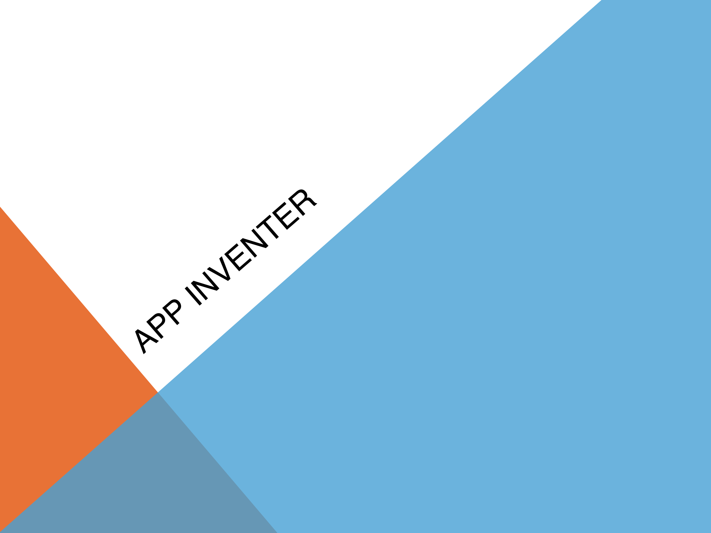
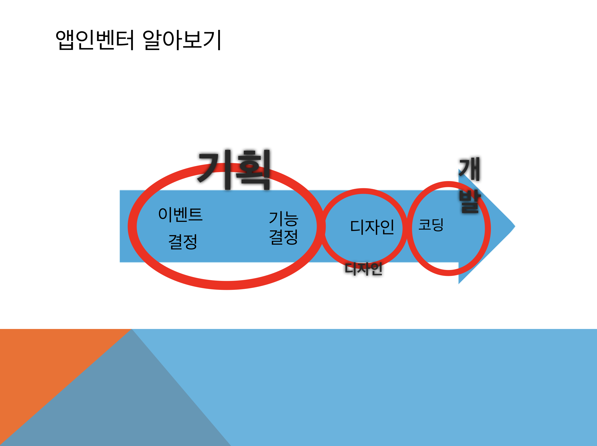
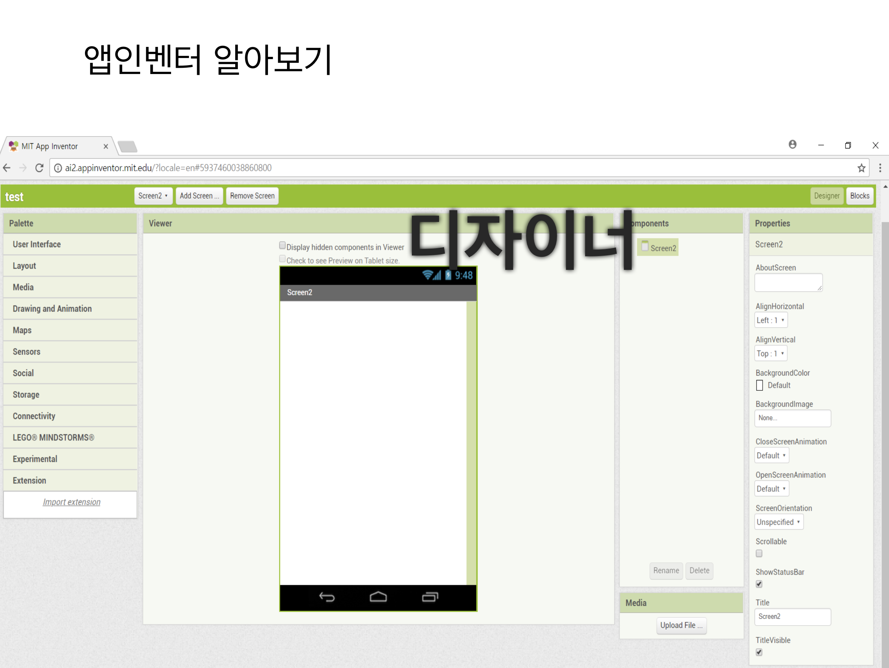
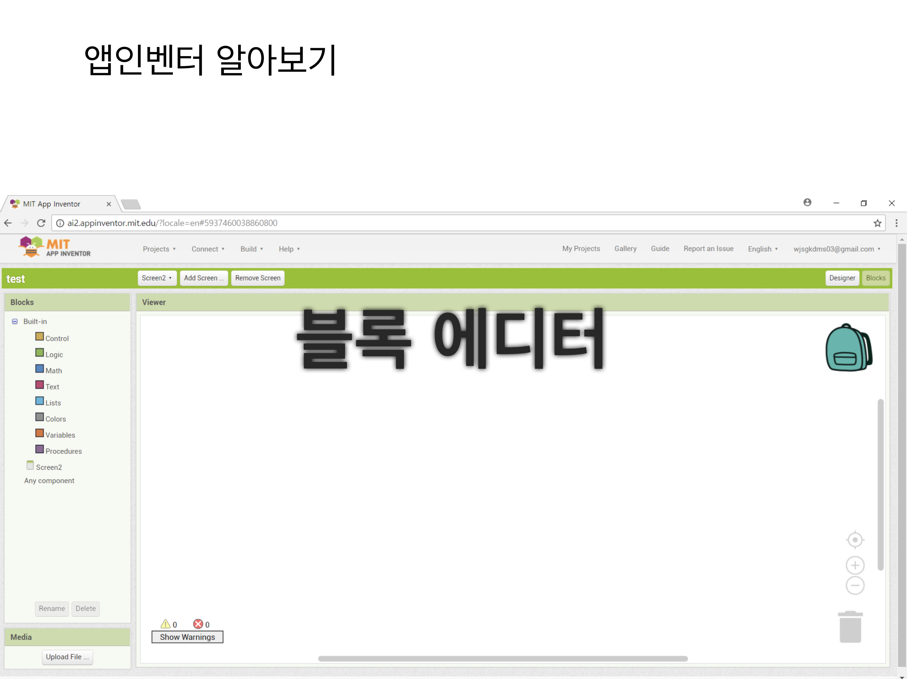
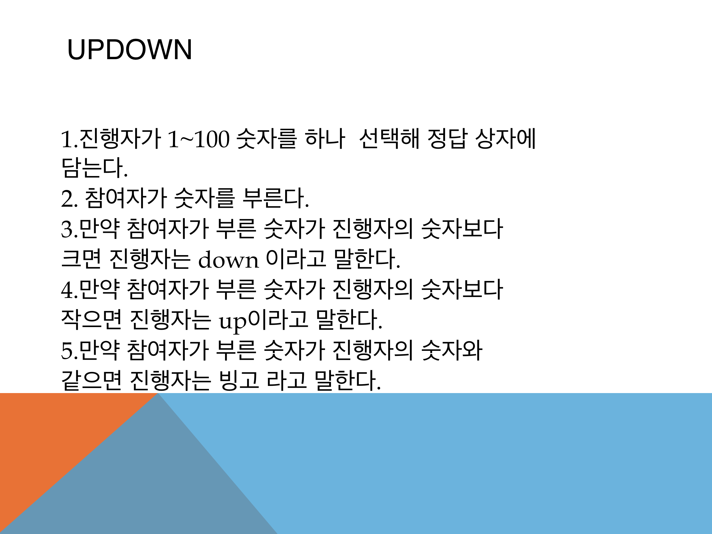

우리는 코딩을 왜 배워야 할까요?
1.문제해결능력을 길러 미래 적응력을 높이기 위해서.
2.생각하는 법을 알려준다.

코딩을 위해서는 알고리즘은 필수적인 요소이다.
알고리즘이란 문제해결을 위한 과정을 순서대로 나열하여 기록한 것으로,
코딩에서 이 알고리즘을 이용하여 자신이 알고 있는 문제해결 과정을 컴퓨터가 수행할 수 있도록 한다.
그렇다면 효율적인 알고리즘은 왜 중요할까?
위 그림처럼 효율적인 알고리즘을 사용하면 동일한 문제라 하더라도 쉽고 빠르게 해결할 수 있다.
다음은 일상생활에서 쓰이는 코딩의 예이다.
'화폐 넣기 > 음료수 선택 > 선택한 음료수 받기 > 잔돈이 있을 땐, 잔돈 받기' 이와 같은 과정을 통해 원하는 음료수를 뽑아서 마실 수 있게 된다.
이렇게 방법을 나열한 것을 알고리즘이라고 한다. 간단히 말해 알고리즘이란, 어떤 일을 해결하려는 방법 및 절차라고 할 수 있다.
다음은 알고리즘의 특성이다.
아이디어>알고니즘 생성>코드작성>테스트 를 완벽히 완성될 때까지 반복한다.

그렇다면 코딩(프로그래밍)은 무엇일까?
컴퓨터를 이용하여 문제를 해결하기 위해서는, 인간의 사고 과정을 통해 그 문제를 추상화하여 해결 가능한 형태로 단순화하고,
프로그래밍을 이용하여 자 동화해야 한다. 프로그램은 컴퓨터가 특정 작업을 수행할 수 있도록 차례대로 작 성한 명령어의 집합을 말하고,
프로그램을 작성하는 과정을 프로그래밍이라고 한 다. 프로그램을 작성할 때에는 자연어,
즉 인간의 언어가 아닌 컴퓨터가 이해할 수 있는 프로그래밍 언어로 작성해야 한다.
<앱인벤터>




<앱인벤터 예제1>

스플레쉬 화면 디자인

스플레쉬 화면 블록

메인 화면 디자인

메인 화면 블록

성공 화면 디자인
성공 화면 블록
updown 예시 다운받기.
<앱인벤터 예제2>


스플레쉬 화면 디자인

스플레쉬 화면 블록

메인 화면 디자인

메인 화면 블록

아이템 화면 디자인
아이템 화면 블록

shallwe 예시 다운받기.